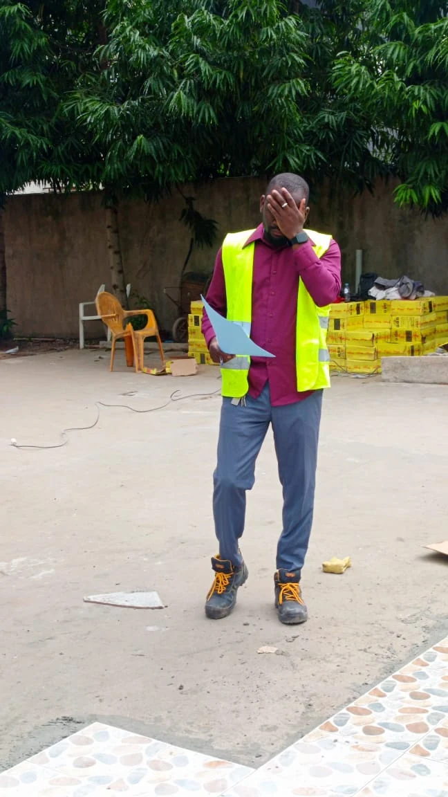

Contrôle médical & assurance maladie
Analyse médico-administrative, conformité des prestations, suivi des structures et recommandations.
MÉDECINE · SANTÉ PUBLIQUE · PRÉVENTION · QUALITÉ · SÉCURITÉ
Médecine clinique · Santé au travail · Santé publique · HSE / QHSE
Médecin clinicien et Médecin Conseil Régional à la CNAM, j’interviens à l’interface du soin, du contrôle médical, de la prévention et de l’amélioration des pratiques.
À propos
Je suis médecin clinicien et Médecin Conseil Régional à la CNAM, basé à San Pedro. Mon parcours s’est construit entre pratique clinique, contrôle médical et santé publique, avec une orientation progressive vers la santé au travail, la prévention des risques et l’amélioration des pratiques.
À la CNAM, j’interviens sur le contrôle médical des prestations, le suivi des structures de soins et l’analyse de conformité des prises en charge. Je conserve en parallèle une activité clinique à la Clinique La Rosette. Ce double regard, clinique et médico-administratif, structure aujourd’hui mon approche de la prévention, de la qualité des soins et de la santé au travail.
Domaines d’intervention
Analyse médico-administrative, conformité des prestations, suivi des structures et recommandations.
Consultations, prise en charge des situations aiguës et chroniques, suivi et orientation des patients.
Prévention des risques professionnels, surveillance médicale, expositions et conditions de travail.
Santé-sécurité, management des risques, culture prévention, conformité et amélioration continue.
Parcours
CNAM · San Pedro
Contrôle médical, suivi des structures de soins, visites terrain, conformité des prises en charge et remontée des constats à la Direction.
Contrôle central / Direction des Prestations · CNAM · Abidjan
Contrôle rétrospectif des prestations, analyse de conformité, documentation des anomalies et rédaction de rapports médico-administratifs.
Clinique La Rosette · San Pedro
Activité clinique à temps partiel exercée en parallèle de la CNAM.
Clinique La Rosette · San Pedro
Médecine générale, pédiatrie, observation clinique, suivi des pathologies courantes et santé des employés et de leurs familles.
Clinique minière · Guinée
Gardes, urgences médicales, surveillance clinique et continuité des soins.
Programme VIH, paludisme et hépatites · Coordination régionale · Guinée
Prévention, dépistage, sensibilisation communautaire, collecte de données et reporting terrain.
En images


Formation
Université Gamal Abdel Nasser de Conakry
TECH Global University
Institut Polytechnique de Marrakech
Cambridge International Qualifications
ESCAM · Côte d’Ivoire
TECH
Documents vérifiables
Publication scientifique
Central African Journal of Public Health · 2022
DOI 10.11648/j.cajph.20220805.11Initiative professionnelle
Projet de soins et de prévention à domicile développé à San Pedro, avec une approche centrée sur l’accessibilité des soins, le suivi et la coordination.